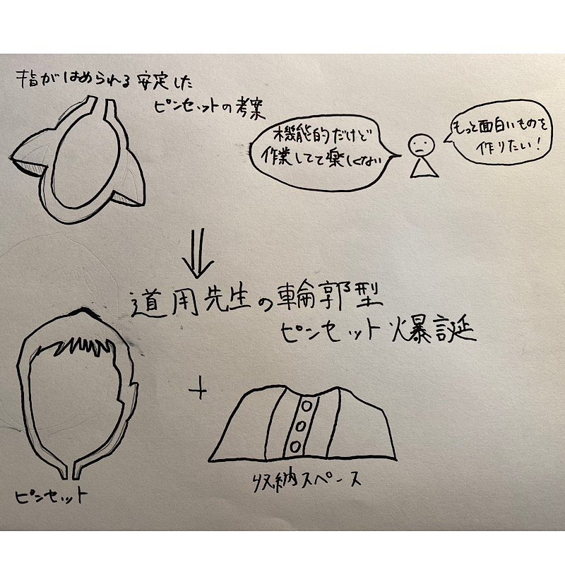
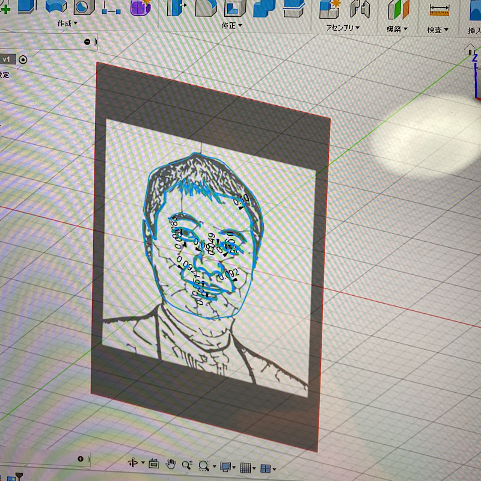
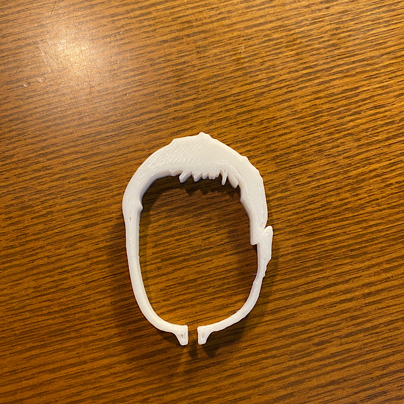

第２回（道用先生、サプライズ動画をお楽しみください）
サプライズ動画
動画はこちら
※写真は本人の許可済み
Assignment1
作品名：輪郭ピンセット
見たとき誰かがくすっと笑ってくれるような物を作りたかった。
機能的なピンセットも考えたが、今回は自分の直感に従って作ってみた。
調べたこと：fusion360上に画像を浮かび上がらせる方法
構想段階のスケッチ・制作のようす



stlファイル
ここをクリック